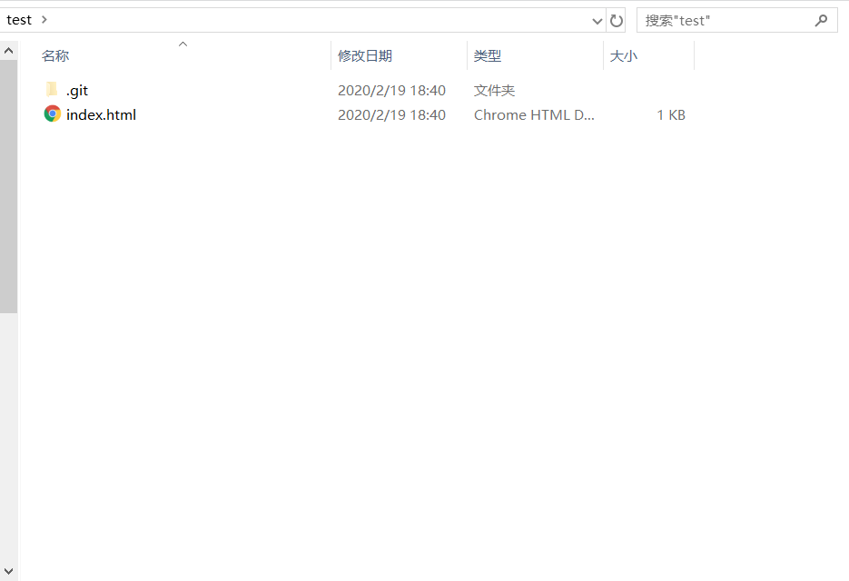

本文主要展示如何从0开始布置个人博客，通过阅读本文，读者能够完成个人博客的初步配置，掌握使用git更新博客的方法。博客内容的具体书写、前端开发的一些小技巧等，将与博客同步更新于 【实时更新】博客编写经验总结
1. 前言
-
除必须配置外，所有配置全为软件默认，帮助用户简化各个组件的部署步骤
-
为读者提供了本文涵盖的所有软件的安装包，一篇文章完成一个完整的项目
-
提供不断完善的概念字典，帮助用户更轻松地阅读和操作
-
由于每个人的知识体系不完全相同，一定会遇到不太明白的地方，不用管，直接往下操作，操作结束了就会有自己的认识
1.1. 适合读者
-
github小白
-
前端小白
1.2. 环境与软件要求
-
Windows 10
-
Chrome浏览器
-
Brackets文本编辑器（或其他，如VS Code）
-
git
2. 基础配置
2.1. 在github上注册账户
进入 github主页 ，根据指示注册
2.2. 在github上设置repository page
Repository指代码库，建立blog需要使用到其中的Page功能。
-
点击下图

-
输入Repository name（代码库名），点击Create Repository即可创建

如果希望默认域名为<username>.github.io，在设置repository name时，直接命名为<username>.github.io
-
自动跳转新建的repository，点击creating a new file

-
创建index.html作为page的根文档，index.html内容复制以下代码即可，将页面拉至最后，点击按钮
index.html<html> <head> <title>My Coding Pages</title> </head> <body> <h1>Hello Coding!</h1> </body> </html>
-
基本配置完毕，转到库页面，点击设置Settings
-
在Settings页面下拉，找到Github Pages配置窗口，在Source部分设置master branch为Source即可
-
更改配置后结果如下，注意这里的默认page域名为
<username>.github.io/<repository name>
因为这里将test作为repository name，如果希望默认域名为<username>.github.io，在设置repository name时，直接命名为<username>.github.io即可
-
至此，repository的page配置已完成，可以开始制作自己的blog了！
3. 使用博客模板快速搭建博客
|
-
使用文本编辑器打开博客文件夹(File-Openfolder-文件夹目录)，打开index.html查看内容（本文使用Brackets文本编辑器，可以同时编辑html和adoc文档）
HTML5的模板内容：
-
index.html：基本模板，博客的主页面，提供到各个博客文章的导航
-
elements.html：模板元素，模板中各种html css类型的展示效果一览，用户可以参考该页面的class分装方式，自定义自己的页面
-
massively模板中特有的页面：
-
generic.html：页面模板，每个博客文章的页面内容
-
-
-
点击图标
 使用文本编辑器自带的浏览功能浏览html效果
使用文本编辑器自带的浏览功能浏览html效果
Brackets的浏览功能使用默认浏览器打开html，建议设置默认浏览器为Chrome，便于从前端开发者视角编辑自己的blog
-
使用Chrome的开发者工具查看模板html中各个部分的class

-
在该页面使用F12或Ctrl+Shift+I进入开发者页面
-
可以看见原页面（左），开发者页面（右），通过点击开发者页面的鼠标按钮，即可在原页面寻找相应部分的class配置（style）
-
-
找到需要个人修改的部分，更改html文本，即可制作自己的blog，可能的结果如下
4. 使用git上传本地博客
|
实际上，用户只需掌握四个git用法即可 |
下文将逐步讲述使用git上传本地博客的方法。
4.1. 概览
git是一款文件版本控制系统。比如，用word写文章时，我们需要人为的为每一次改动分别另存为不同的文件版本进行存储，从而方便自己找回原来的文件，随时复原。而git通过代码实现了这一点。
github以git为核心，为用户提供了基于代码库repository的各种功能，如多人共同编辑、共同下载、共同使用等等。
4.2. git的安装
本文提供了git安装包，见附录：相关文件，全部选项都选择默认配置，安装即可
安装结果： . git bash：git的控制台页面，基本操作使用git语句即可完成 . git GUI：git的图像页面，本文中不会用到，有兴趣可以自行百度或找 廖雪峰的git教程 学习
4.3. git的使用
github与git的关系，就相当于百度网盘与本地文件的关系，在每次操作时，将github上代码仓库中的文件下载（clone）到本地，在本地使用文本编辑器进行编辑，之后push（上传）到github对应的代码仓库中，即完成github某代码仓库的版本更新。博客制作的过程便是更新的过程。
|
-
在新建的github repository页面，点击 clone or download按钮，复制其中的ssh（或https）

-
在本地博客储存目录（这里为桌面）打开git bash（或cd到相应目录）

-
将git上的代码库clone（克隆）到本地
git clone <步骤1中复制的ssh或https>得到代码库test
 -
按照使用博客模板快速搭建博客中的内容修改博客文件
-
修改完成，使用git bash上传

-
change dictionary（cd）到博客代码库的本地文件夹
cd <Blog本地代码库（文件夹）> -
将文件夹下所有文件上载到git
git add . -
为新上载的文件做一个版本备注
git commit -m "版本备注" -
将所有文件push到github相应的代码库中（该文件夹与github代码库同名）
git push -u origin master -
如果不是采用ssh的方法，将会要求输入github的账户和密码，进行确认，如果是ssh方法则直接显示push成功
-
5. 附录：字典
5.1. Repository
repository: A repository contains all project files, including the revision history.
代码库：包含所有项目文件和版本历史的仓库。
5.2. Page
页面：基于repository中的index.html文档，建立github网页
5.3. Brackets文本编辑器
Adobe开发的一款轻便的、多功能的文本编辑器，支持在线浏览adoc文档
5.4. adoc文档
Asciidoctor软件对应的文档，采用类Markdown语法，便于使用者专注于编辑网页文本而非网页设计
6. 附录：相关文件
-
提取密码：jx55
7. 附录：使用git，将本地文件与github建立联系
github为了与git保证安全的数据传输，提供了两种方法与本地文件连接
-
SSH Key：一次性配置，以后直接提交；项目拥有者才可以连接，需要添加SSH key
-
HTTPS：可以直接打开github代码库页面的网址，但每次通过git提交的时候都要输入用户名和密码；任意用户可随意clone或者push项目于或到github，不管谁的项目
本文采用SSH Key的方式进行配置，步骤如下：
-
打开git bash，将“”中的内容自行替换
git config --global user.name "<your_username>" git config --global user.email "<your_email@example.com>"可以通过`git config --list`查看当前Git环境所有配置。
-
使用以下语句建立ssh key，这里的email需要与上一步骤中的email地址相同；输入该语句后回车，git后台会自动要求用户输入ssh存储文件的名称和使用ssh的密码，简单起见，直接回车两次即可，即使用默认的ssh文件名称、无密码。
ssh-keygen -t rsa -C <your_email@example.com>参数含义：
-
-t： 指定密钥类型，默认rsa，可省略
-
-C：设置注释文字，比如邮箱（会放在公钥里）
-
-f： 指定密钥文件存储文件名

-
-
复制上一步
Your public key has been saved in <ssh存储地址>的<ssh存储地址>，使用以下语句导出ssh key的内容：cat <ssh存储地址> -
复制上一步中ssh key的内容（输入命令行后输出的一大堆东西），进入之前创建的github页面，点击右上角个人头像下的settings，进入账号设置

-
进入
SSH and GPG keys设置页面，点击New SSH key，将上一步中复制的内容粘贴于此，点击Add SSH key即可